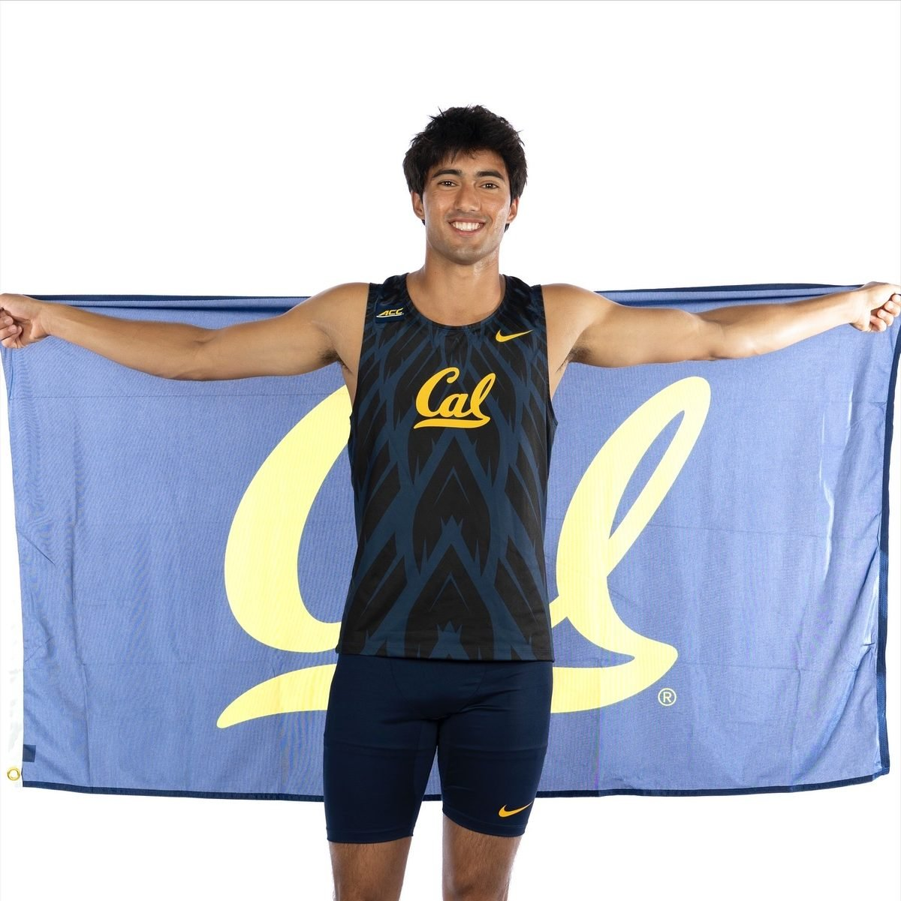
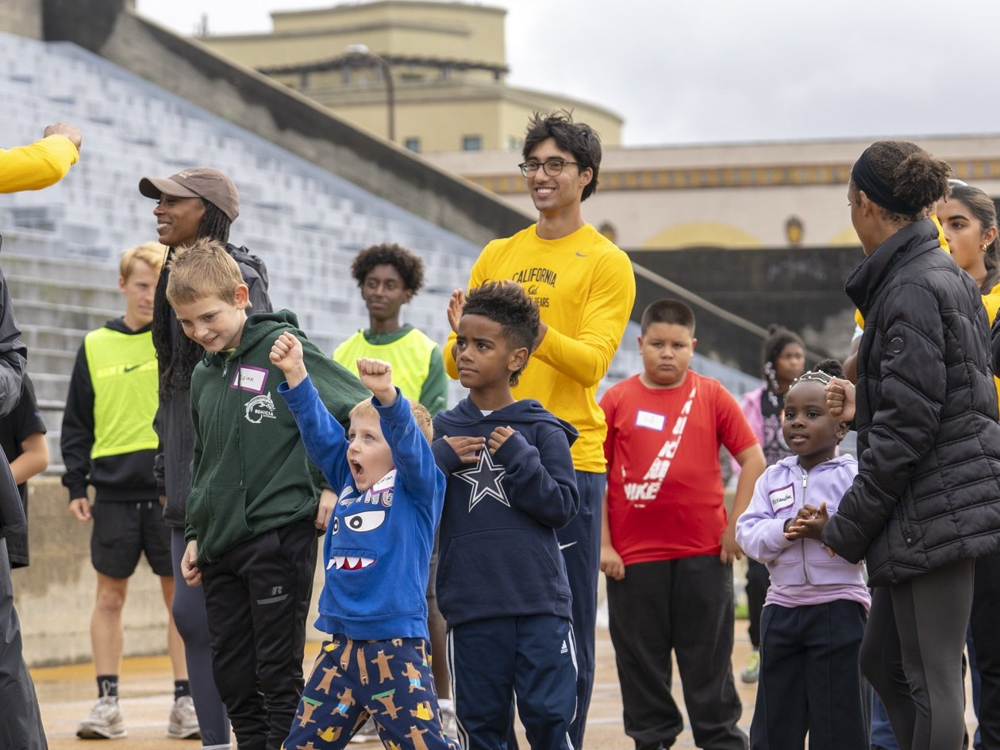
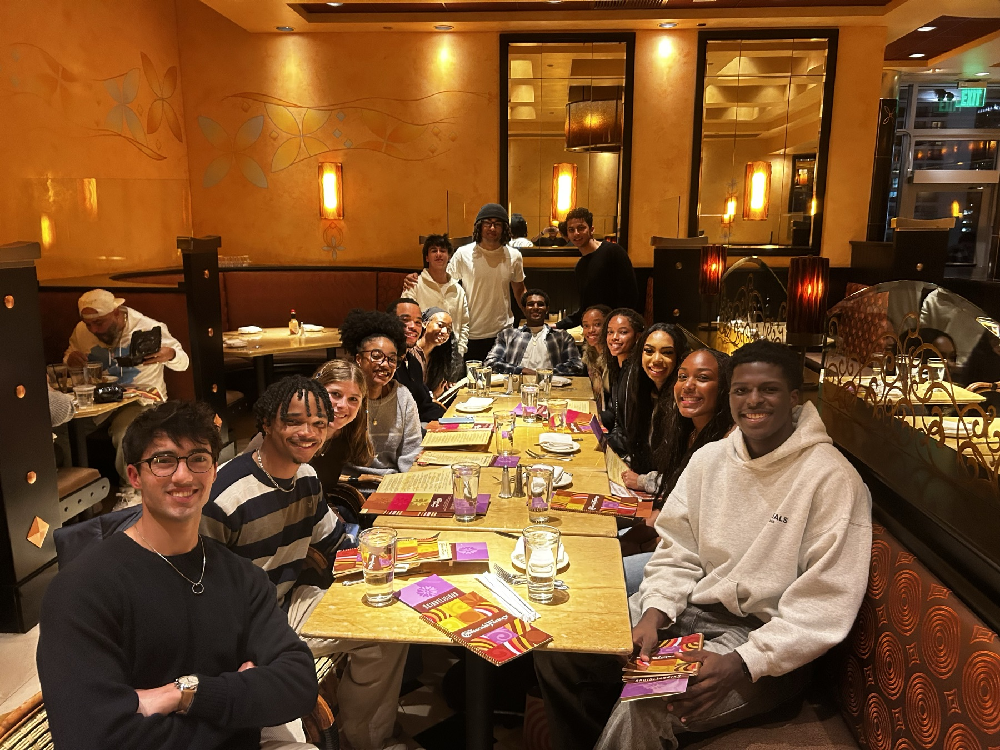

Track & Field

- 100m - 10.67130th Big Meet · May 3, 2025
- 200m - 21.20Sac State Hornet Invitational · March 21, 2025
- 400m - 48.55Brutus Hamilton · April 5, 2025
About

Transitioning from distance running in high school, I walked on to the Cal track and field team in the spring of 2024 as a 400m and 200m specialist. I used my position to help organize Track and Field involvement in multiple community events, including Go Girls, Go Bears, Go Play, and E-Track. After a breakout sophomore season and being named team captain in the fall of my junior year, I ultimately decided to leave the team to focus on my research and personal life.
Coaching

As a coach and trainer, I draw on my experience with strength, endurance, and speed training, as well as multiple years as a private tennis instructor to both children and adults. My training focuses on meeting the athlete’s goals by developing coordination, strength, and endurance, framed by a lived understanding of biomechanics and training cycles. For coaching inquiries, reach me at avinashschwarzkopf@berkeley.edu.
